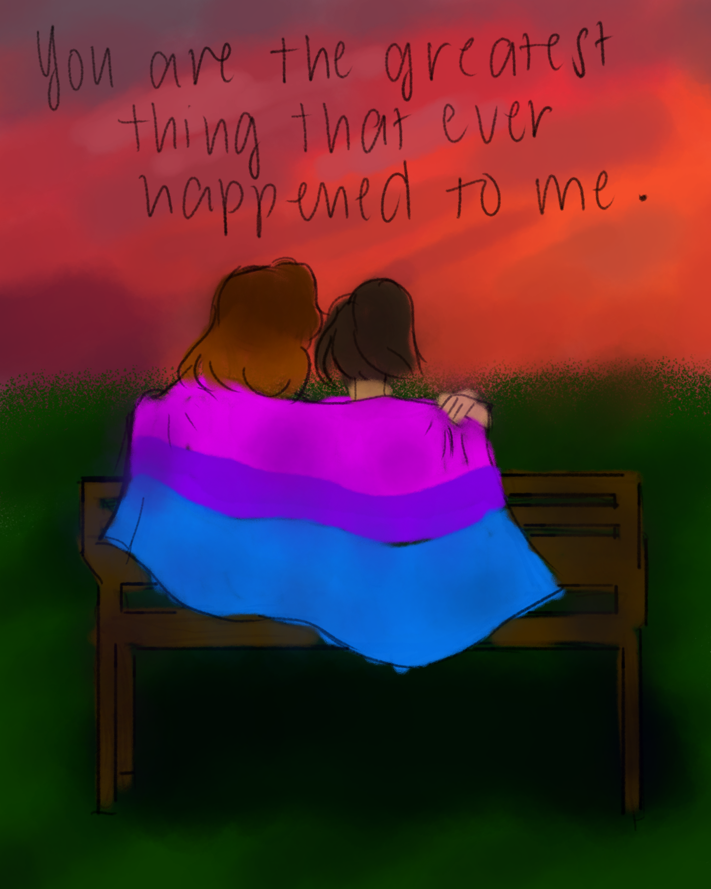
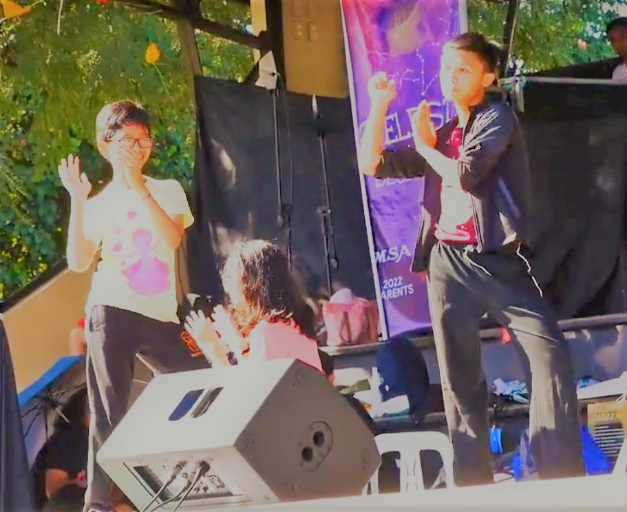

For me, I think the arts are a medium for me to put all my emotions into when I am overwhelmed by the sciences. It's a way for me to channel all my creativity into, when I've exhausted the sciences. Music, theatre, visual arts, writing-- they all let me remove my focus from STEM for a while and just... escape.
Gus Africa, 2023 (Visual Arts, Performance Arts)

For me, it is one of my escapes whenever the requirements are becoming too stressful. Dancing has been part of my life since I was a kid. It's one of the things I enjoy doing the most, more than studying. Even though for most people learning and memorizing choreographies is hard, it always manages to destress me. Whenever I feel sad, I try to dance it away and most of the time it works. Dancing has been a crucial part of my daily life and it also made me love music in general.
I don't regret going to Pisay but one of things that I do regret is that I may have a hard time getting a career that isn't science related.
Troy Valencia, 2023 (Performance Arts)
